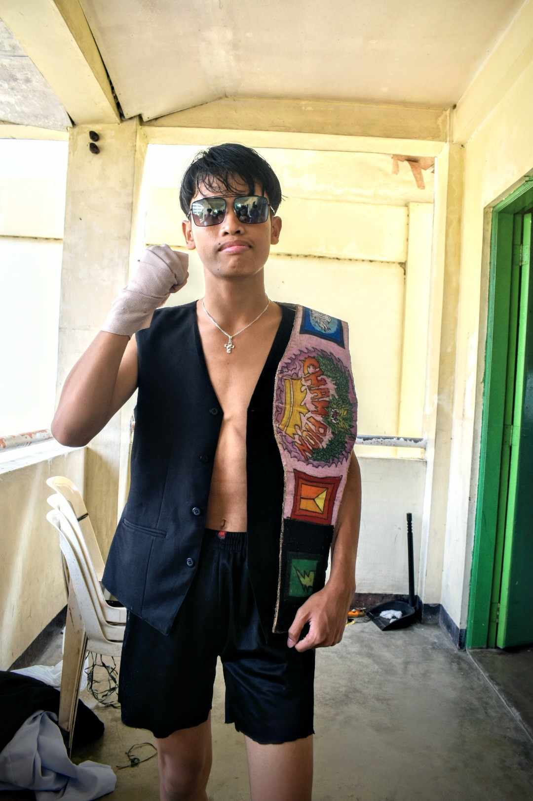

Sa isang lugar na tila bilangguan, subalit tinatawag nilang paaralan, doon unang nagsanib ang mga kaluluwang pagód sa sistema—ang mga kasapi ng tinaguriang Gangsta Paradise. Hindi sila nagtagpo dahil sa kapalaran lamang, kundi dahil sa iisang layuning maghasik ng kagaguhan sa mundong patuloy silang hinahatulan. Sa pagitan ng apat na pader na puno ng pangaral at paghihigpit, nabuo ang pagkakaibigang sinubok ng panahon—isang samahang nag-ugat sa paghihirap, ngunit namunga ng di-matitinag na pagkakaisa.
ANG MGA URI NG TAONG MATATAGPUAN KUNG SAAN NAGTAGPO ANG MGA MIYEMBRO AY HINDI MGA NORMAL.
MAKIKITA MO ANG MGA SUMUSUNOD SA AMING SILID ARALAN:
Ngunit sa di-inaasahang pagkakataon, sumiklab ang alitan sa pagitan ng dalawang kasapi—isang pagtatalo kung sino ang nararapat mamuno sa kanilang kapatiran. Doon, hinamon ni Edsi ang pinunong naghahari, si Sigma Boy, sa isang marangal na duelo upang ipagtanggol ang dangal at pamumuno ng kanilang samahan.
At ang nagwagi sa labang iyon ay walang iba kundi ang nag-iisang Sigma — ang itinakdang mamuno sa kanilang samahan.

SUBALIT KAHIT NA ANG "THE SIGMA" ANG PINAKANIRERESPETO SA GRUPO, MAY ISANG
LAPASTANGAN NA NINAKAW ANG PINAKAMAHALAGA NIYANG KAYAMANAN, ANG KANIYANG BUY 1 TAKE 1 NA D'BURGER. DAHIL SA INSIDENTE NA ITO, NAWALAN NG PAMBARA ANG KANIYANG PANULAK NA MILKTEA NA KANIYANG ITINABI AT ININGATAN.
ANG MGA HINIHINALANG SALARIN AY ANG SUMUSUNOD:
ALYAS GOJO CRUZ
ALYAS KHALIL
HANGGANG NGAYON AY PATULOY PA RIN ANG PAGHAHANAP NAMIN NG HUSTISYA PARA SA
AMING
PINUNO
Kahit na ang pinakamagaling na detective sa kanilang
baryo ay hindi matukoy kung sino nga ba ang may sala. Ang kaniyang mungkahi ay:
Dahil sa matinding poot ng aming pinuno, napagpasiyahan niyang ipakalat ang lakas ng aming samahan sa iba’t ibang panig, sa pamamagitan ng mga itinalagang duo, upang tuklasin ang pinagmulan at wakas ng lahat ng ito
DAVE&DAVE
Silang dalawa ang itinakda upang bantayan Ang pinuno dahil sa husay ng mga abilidad nila pagdating sa depensa, wala pang nakatagos na kahit isang atake sa abilidad ni dave&dave na tinatawag na "ultimuto techniko: subumutu araru-ebayku". ito ang dahilan kaya sa kanila ipinagkatiwala ni the sigma ang kaniyang kaligtasan.
KAIRI n EDSI
Itinalaga sila ng aming pinuno bilang mga tagapagparusa, sapagkat kaya nilang bumuo ng isang maalamat na bagay na tinawag na ‘saluyot yarn’ — isang tali na nagdudulot ng kamatayan sa sandaling ito'y isakal sa leeg. taglay rin ni edsi ang remote na kayang kontrolin ang isip ng mga kalaban"
KADILIMAN AT KASAMAAN
Sila ang mga kapre na itinalaga bilang mga bantay upang pangalagaan ang kagubatan kung saan matatagpuan ang kayamanan ng aming pinuno na mga puno ng saging laban sa mga Bisayang nagnanais itong mapasakamay.
eric hezie duo
Sila ang utak ng kapatiran—ang tinaguriang child prodigy ng kasalukuyang panahon. Makikita sa larawang nasa itaas ang tagpo habang masinsinan nilang sinasaliksik ang mga dokumentong maaaring makatulong sa paghahanap ng salarin na nagnakaw ng D’Burger. Kasama nila sa pagsisiyasat ang aming iginagalang na supremo ng selda kung saan nagtagpo ang mga miyembro ng grupo — si Ginoong Anton.
nono n khalil
Sila ang pinakahiwagang kasapi ng kapatiran. Taglay ni Khalil ang kakayahang nakuha ang puso at tanso ng sinumang binibini sa isang sulyap lamang. Si Noel naman ay pinagkalooban ng awra ng kalibugang walang kapantay—isang pwersang kayang magpabagsak ng diwa ng sinumang mahina ang loob. Sa oras na magsanib ang kanilang lakas, walang makatitinag sa kanila. Sa isang video sa ibaba, masisilayan ang kanilang mga kalokohan na halos umakit sa mga taong walang kamalay-malay—kasama rito ang walang kupas na si Hezie.